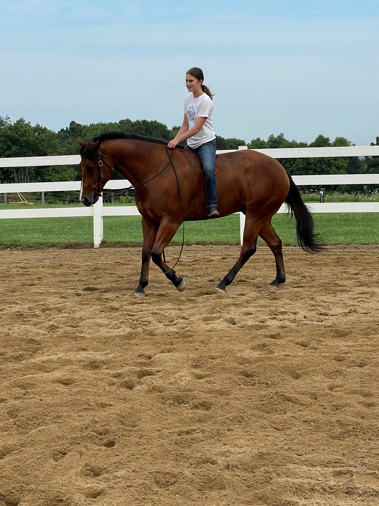
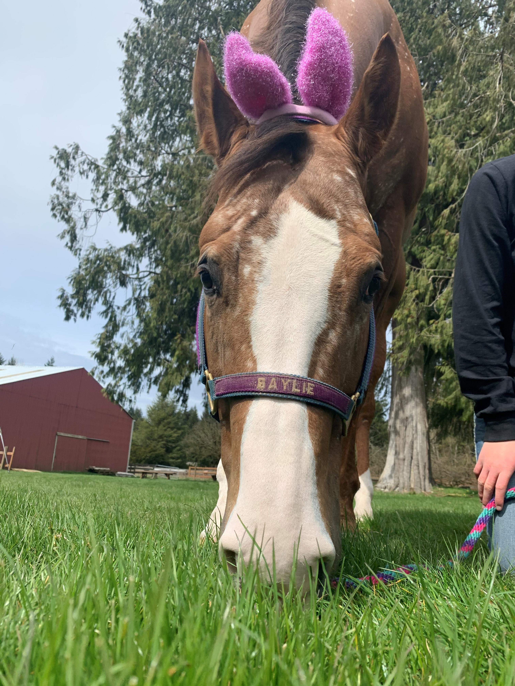
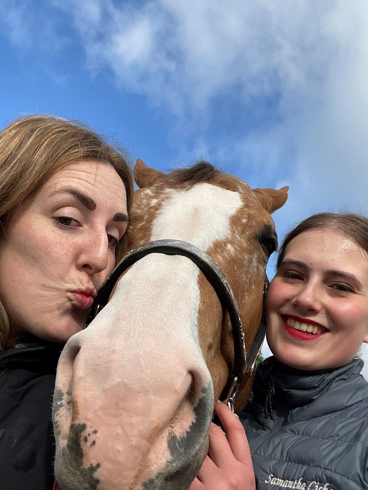
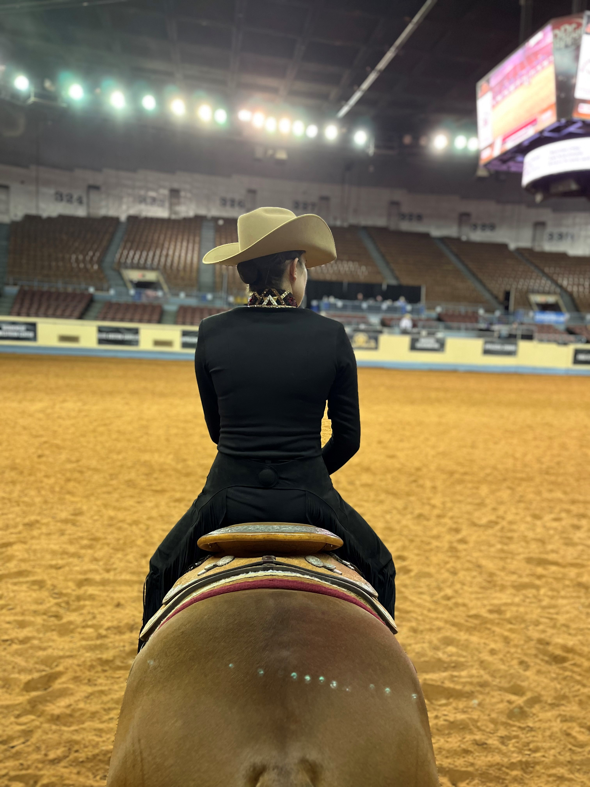
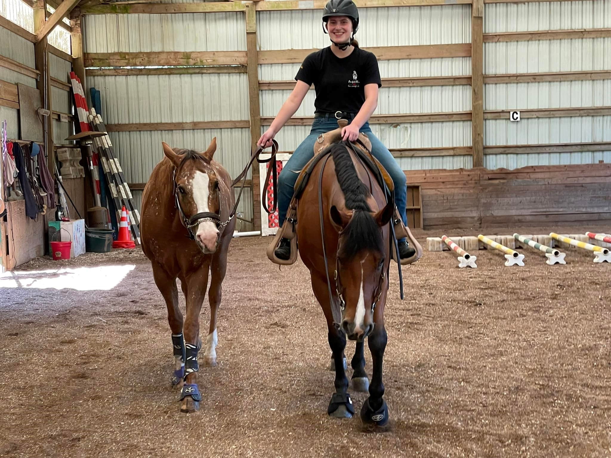

Gallery
I started riding when I was seven because I loved horses, but overtime it has become a lot more than that. I have developed
passion and a love for the sport, learned responsibility and hardwork, and gained an activity that my whole family loves.
This page showcases my journey and experiences with horses over the last 10 years.

I went to my first horse show when I was 10, and although I was very nervous,
my riding team and my family were there to support me, so I had a lot of fun and was
soon hooked on horse showing.

My family got Baylie when I was 11, and I struggled at first to get along with her,
but after a lot of hard work and bonding time, we now have a great relationship.
I even trust her enough to ride her without a saddle, pictured above from a few years ago.

Baylie got hurt when I was 15 and couldn't show for a while, so my family looked into getting
a second horse. It took us a few months, but we eventually found Austin and loved him right away.

Although taking care of two horses can be a lot of work, it has been an amazing learning experience
and I am so grateful to have to incredible horses. One of my favorite things to do is dress them up in matching
costumes, such as bunny ears.

After not being able to ride Baylie very much for almost two years, she finally was able to go to her first
horse show back from her injury in May of this year.

This summer, Austin and I showed at a relatively large event in Oklahoma City in July. We had a rough start to our
week of showing, but wthin a few days we had adjusted and went on to have great rides and do really well in the show.

Working with horses hasn't always been easy, but it has been so rewarding, and I can't imagine my life
without my horses in it.
For more pictures and videos of me and my horses, you can check out my YouTube
or my Facebook!